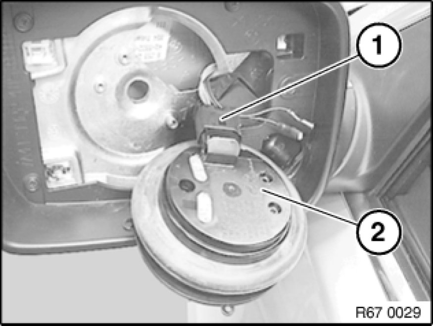

Replacing Drive Unit for Electrically Operated Left or Right Door Mirror
67 13 001 - Replacing drive unit for electrically operated left or right door mirror

Necessary preliminary tasks:
- Remove mirror glass for mirror Replacing Mirror Glass

Release screws (1).
Fold out drive unit for electrically operated door mirror (2) in direction of arrow.

Disconnect plug connection (1) and remove drive unit for electrically operated door mirror (2).
Important!
In order to avoid ingress of water in non-sealed plug housing, coat plug housing (1) at cable and connection ends with battery terminal grease.